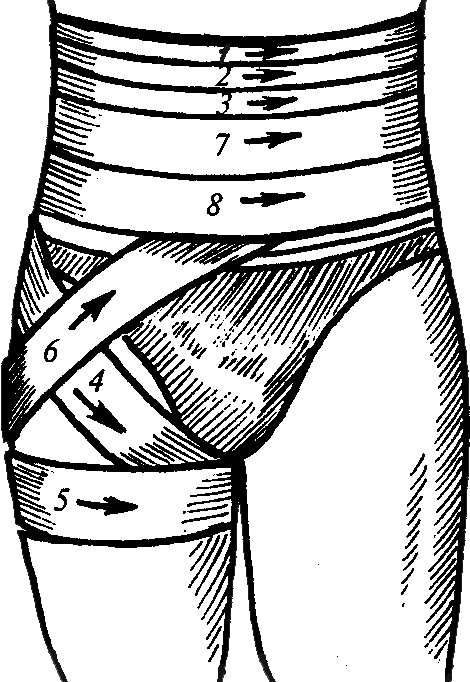

Ранение, его признаки и виды
Ранение ― нарушение целостности кожи и слизистых оболочек.
- Признаки ранения:
- Боль
- Нарушение целостности тканей
- Обычно кровотечение
- Виды ранения:
- Резанные
- Колотые
- Рубленные
- Ушибленные
- Укушенные

Общий порядок оказания первой помощи
- Оценить состояние пострадавшего, осмотреть его;
- Привлекая помощника или самостоятельно вызвать скорую медицинскую помощь;
- Выполнить необходимые мероприятия первой помощи: остановить кровотечение, наложить повязки, придать пострадавшему необходимое в зависимости от вида травмы положение;
- Контролировать состояние пострадавшего до прибытия скорой медицинской помощи.
Рана головы
- Закрыть рану стерильной марлевой салфеткой, прижав ее к кости черепа;
- Зафиксировать салфетку с помощью перевязочных материалов;
- Если давления бинта окажется недостаточно, и вновь начнется кровотечение, сдавить края раны руками;
- Положить пострадавшего на спину в положение с приподнятыми плечами и головой;
- Вызвать скорую помощь.
Ранение грудной клетки
- Пострадавший в сознании:
- Закрыть рану ладонью;
- Усадить пострадавшего, наклонив его в сторону раны;
- Наложить на рану перевязочный материал, закрыть его полиэтиленом или любым другим непроницаемым для воздуха материалом и забинтовать, либо заклеить пластырем;
- Вызвать скорую помощь;
- Контролировать состояние пострадавшего, быть в готовности приступить к сердечно-легочной реанимации.
- Пострадавший без сознания:
- Закрыть рану ладонью, наложить перевязочный материал, закрыть его полиэтиленом или другим воздухонепроницаемым материалом, забинтовать, либо заклеить пластырем;
- Наложить пострадавшего в безопасное положение, раной вниз;
- Вызвать скорую помощь;
- Контролировать состояние, быть в готовности приступить к сердечно-легочной реанимации.
Раны в области живота
- Если у пострадавшего продольная рана живота, положить его на спину. Если рана поперечная - положить пострадавшего на спину, согнув ноги в коленях, чтобы уменьшить напряжение на рану;
- Наложить на рану повязку. Если видна часть кишечника, то вначале закрыть ее полиэтиленом, не вправляя и не трогая руками, а затем наложить перевязочный материал и не туго наложить широкую повязку;
- Вызвать скорую помощь;
- Контролировать состояние пострадавшего, если он начнет кашлять или у него начнется рвота, придержать повязку, чтобы не вывалился кишечник.
